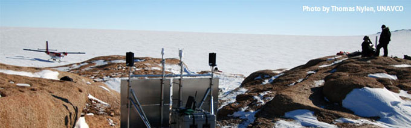

Quick Facts

Number of sites:
In all, there will be over 100 stations, some permanent, some temporary. Currently, 20 sites of the ANET project have both seismic and GPS equipment and make up what is called the backbone network, with the goal of remaining in place as part of a long-term measurement network.
Who can use the data:
All data are being made publically available. Researchers from around the world can access these data for a variety of applications, including atmospheric, meteorological, geological, glaciological, and climate studies.
Project Funding:
POLENET science projects are funded by national funding agencies and polar research institutes. Several major POLENET projects, including ANET, GNET, GAMSEIS and LARISSA, are funded by the National Science Foundation (NSF), with contributions from partnering nations. In 2006 the National Science Foundation awarded Major Research Infrastructure (MRI) funding to UNAVCO and IRIS/PASSCAL to design and build power and communication systems for autonomous polar station operation. Logistical support is provided by the U.S. Antarctic Program, the Arctic Research Support and Logistics Program, and corresponding polar logistics programs in POLENET partner nations.
Timespan of project:
Deployment of autonomous stations at remote polar sites commenced over a decade ago, but major networks of remote stations were first deployed beginning with the International Polar Year 2007-08. Some stations are designed to make measurements for a 2-3-year time span, whereas the backbone array of remote stations still remains in place today.
Interesting bits and pieces:
- First quasi-continuous, autonomous GPS stations at remote sites in Antarctica were deployed in the late 1990's
- First GNET and ANET stations installed in 2007.
- Air support in Antarctica includes LC-130, Twin Otter and Basler Turbo 6 fixed-wing aircraft, and A-Star and Bell 212 helicopters.
- Communications equipment consists of HF and VHF radios, Iridium satellite phones, GOES satellite system for internet.
- A single installation of a GPS and seismic site includes over 3,000 pounds of equipment and takes, on average, about four hours to install, depending on weather conditions and proximity of the aircraft to the installation site.